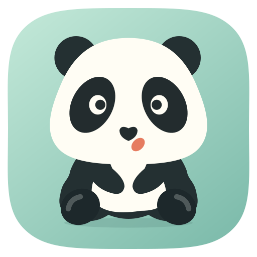

<!doctype html>
<html lang="zh-CN">
<meta charset="utf-8">
<meta name="viewport" content="width=device-width, initial-scale=1">
<title>Muster · 项目快捷轮盘</title>
<style>
:root { color-scheme:light; font:14px/1.5 -apple-system,BlinkMacSystemFont,"PingFang SC",sans-serif; color:#252735; background:#f4f4f6; --line:#dedfe6; --muted:#626574; --accent:#4f46e5 }
* { box-sizing:border-box }
body { margin:0 } button,input { font:inherit; cursor:pointer } button { color:inherit }
:focus-visible { outline:3px solid #837cf0; outline-offset:3px }
main { max-width:1060px; margin:0 auto; padding:clamp(16px,4vw,44px) }
h1,h2,p { margin:0 } h1 { font-size:24px; letter-spacing:-.5px } h2 { font-size:15px }
.intro { margin:5px 0 20px; color:var(--muted) }
.window { border:1px solid var(--line); border-radius:13px; overflow:hidden; background:white; box-shadow:0 12px 40px #2527350b }
.titlebar { height:42px; display:flex; align-items:center; gap:9px; padding:0 16px; border-bottom:1px solid var(--line); font-weight:600; background:#fafafb }
.titlebar img { width:24px;height:24px }.current-tab { margin-left:10px; font-size:13px; color:var(--accent); border-bottom:2px solid; align-self:stretch; display:grid; align-items:center; padding:0 6px }
.layout { display:grid; grid-template-columns:minmax(220px,30%) 1fr }
aside { padding:18px 14px; border-right:1px solid var(--line) }.heading { display:flex; justify-content:space-between; align-items:center; gap:10px }
.count,small { color:var(--muted);font-size:12px }.rows { margin-top:12px }
label { display:flex; gap:11px; align-items:center; padding:11px 8px; border-bottom:1px solid #ececf1; cursor:pointer }label:hover { background:#f5f5fa }
input[type=checkbox] { width:16px; height:16px; accent-color:var(--accent) }label b,label small { display:block }label small { overflow-wrap:anywhere }
.desktop { min-width:0 }.stage { display:grid; place-items:center; position:relative; min-height:330px; background-color:#ededf2; background-image:radial-gradient(#d4d4dd .8px, transparent .8px); background-size:15px 15px; overflow:hidden }
.orbit { position:relative; width:min(194px,96%); aspect-ratio:1; border-radius:50%; pointer-events:none }
.orbit.expanded { pointer-events:auto }
.hub { position:absolute; top:50%; left:50%; transform:translate(-50%,-50%); width:62px;height:62px; border-radius:50%; background:white; border:1px solid #c6c7d4; display:grid; place-items:center; z-index:2; pointer-events:auto; box-shadow:0 4px 16px #2423371c }
.hub img { width:38px;height:38px }.expanded .hub { border-color:#d9dae4; box-shadow:none }
#items { position:absolute; inset:0; width:100%; height:100%; opacity:0; visibility:hidden; transform:scale(.52); transform-origin:center; filter:drop-shadow(0 4px 6px #27263b22); transition:transform 160ms cubic-bezier(.25,.8,.25,1), opacity 120ms, visibility 0s 160ms }
.expanded #items { opacity:1; visibility:visible; transform:scale(1); transition:transform 210ms cubic-bezier(.18,.85,.25,1), opacity 145ms }
.project { cursor:pointer; outline:none }.sector { fill:#fff; stroke:#d9dae4; stroke-width:1; transition:fill 100ms }
.project text { fill:#252735; text-anchor:middle; font-weight:600; font-size:13px; pointer-events:none }
.project:hover .sector,.project:focus-visible .sector { fill:#e5e3ff;stroke:#9790ed }.project:hover text,.project:focus-visible text { fill:#4236b6 }
.empty { position:absolute; top:calc(50% + 42px); left:0;right:0; text-align:center; color:var(--muted);font-size:13px }
.editor { padding:14px 18px 18px; border-top:1px solid var(--line); min-height:158px }.windows { display:flex; gap:6px; flex-wrap:wrap; margin:10px 0 }.win { display:inline-flex; align-items:center; border:1px solid var(--line); border-radius:6px; overflow:hidden }.win.active { border-color:#aca7f0; background:#efeeff }.win button { border:0;background:transparent;padding:4px 8px;font-size:12px }.win button:hover { background:#e5e4ef }.win.active button:first-child { color:#4338ae;font-weight:600 }.message { font-size:13px; color:var(--muted) }.path { display:block; margin-top:3px; font:12px ui-monospace,monospace;color:var(--muted);overflow-wrap:anywhere }
@media(max-width:650px) { main { padding:14px 10px }.layout { grid-template-columns:1fr } aside { border-right:0;border-bottom:1px solid var(--line) }.rows { display:grid;grid-template-columns:1fr 1fr }label { padding:5px 2px }.stage { min-height:282px }.orbit { width:min(194px,96%) } }
@media(prefers-reduced-motion:reduce) { #items,.expanded #items,.sector { transition:none } }
</style>
<main>
  <h1>项目快捷轮盘</h1>
  <p class="intro">勾选常用项目，把鼠标移到熊猫上，左键点击项目即可切换。</p>
  <div class="window">
    <header class="titlebar">Muster <span class="current-tab">项目</span></header>
    <div class="layout">
      <aside><div class="heading"><h2>加入快捷轮盘</h2><span class="count" id="selectedCount"></span></div><div class="rows" id="rows"></div></aside>
      <div class="desktop">
        <section class="stage" aria-label="桌面轮盘试用区"><div class="orbit" id="orbit">
          <button class="hub" id="hub" aria-label="展开项目轮盘" aria-controls="items" aria-expanded="false"></button>
          <svg id="items" viewBox="0 0 194 194" role="group" aria-label="快捷项目"></svg><p id="empty" class="empty" hidden>在项目列表中勾选一个项目</p>
        </div></section>
        <section class="editor" aria-label="VS Code 窗口模拟"><div class="heading"><h2>VS Code 窗口</h2><small>原型模拟</small></div>
          <div class="windows" id="windows"></div><p class="message" id="message" role="status">点击轮盘里的项目，在这里查看对应窗口。</p><span class="path" id="activePath"></span>
        </section>
      </div>
    </div>
  </div>
</main>
<script>
const projects = [
  ['Muster','~/Code/muster'], ['Nebula','~/Code/nebula'], ['DMP','~/Code/php/dmp.wtzw.com'],
  ['Nova','~/Code/nova'], ['Market','~/Code/market-monorepo'], ['Wiki','~/Code/knowledge-base']
];
const byId = id => document.getElementById(id);
const orbit = byId('orbit'), hub = byId('hub'), items = byId('items');
const key = ['muster', 'quick-projects', 'v1'].join('.');
let selection = projects.slice(0,3).map(([,path]) => path);
try {
  const stored = JSON.parse(localStorage.getItem(key));
  if (Array.isArray(stored)) selection = projects.map(([,path]) => path).filter(path => stored.includes(path));
} catch { /* In a private browser the selection still works for this visit. */ }
// Keys are project paths. Keeping a live window separate from its history also models reopening.
const opened = new Map(), history = new Set();
let front = null, nextWindow = 1;
function expand(value) {
  orbit.classList.toggle('expanded',value);
  hub.setAttribute('aria-expanded',String(value));
  byId('empty').hidden = !value || selection.length > 0;
}
function drawWheel() {
  const selected = projects.filter(([,path]) => selection.includes(path));
  byId('selectedCount').textContent = `${selected.length} / ${projects.length}`;
  const svg = (tag, attrs) => {
    const element = document.createElementNS('http://www.w3.org/2000/svg', tag);
    for (const [key, value] of Object.entries(attrs)) element.setAttribute(key, value);
    return element;
  };
  const at = (r, angle) => [97+r*Math.cos(angle), 97+r*Math.sin(angle)];
  items.replaceChildren(...selected.map(([name,path],i) => {
    const half = Math.PI/selected.length, mid = -Math.PI/2 + 2*half*i;
    const start = mid-half, end = mid+half, outer = 92;
    const sector = selected.length === 1
      ? svg('circle', {class:'sector', cx:97, cy:97, r:outer})
      : svg('path', {class:'sector', d:`M 97 97 L ${at(outer,start)} A ${outer} ${outer} 0 0 1 ${at(outer,end)} Z`});
    const action = opened.has(path) ? '切回窗口' : '打开项目';
    const group = svg('g',{class:'project',role:'button',tabindex:0,'aria-label':`${name}，${action}`});
    const title = svg('title',{});title.textContent=`${action} · ${path}`;
    const [x,y] = at(62,mid);
    const text = svg('text',{x,y:y+4});text.textContent=name;
    group.append(title,sector,text);
    group.onclick = () => {openProject(name,path);expand(false)};
    group.onkeydown = event => {
      if (event.key==='Enter' || event.key===' ') {event.preventDefault();hub.focus();openProject(name,path);expand(false)}
    };
    return group;
  }));
  byId('empty').hidden = !orbit.classList.contains('expanded') || selected.length > 0;
}
for (const [name,path] of projects) {
  const label = document.createElement('label'), box = document.createElement('input');
  box.type = 'checkbox';box.checked = selection.includes(path);box.setAttribute('aria-label',`将 ${name} 加入轮盘`);
  box.onchange = () => {
    selection = box.checked ? [...selection,path] : selection.filter(p => p!==path);
    try { localStorage.setItem(key,JSON.stringify(selection)); } catch {}
    drawWheel();
  };
  const text = document.createElement('span'), title = document.createElement('b'), location = document.createElement('small');
  title.textContent = name;location.textContent = path;text.append(title,location);label.append(box,text);byId('rows').append(label);
}
function openProject(name,path) {
  const live = opened.has(path), seen = history.has(path);
  if (!live) opened.set(path,{name,id:nextWindow++});
  front = path;history.add(path);
  const action = live ? '已唤起已有窗口' : seen ? '原窗口已关闭，已重新打开' : '首次打开项目';
  byId('message').textContent = `${action} · ${name} · 窗口 ${opened.get(path).id}`;
  drawWindows();
}
function drawWindows() {
  drawWheel();
  const list = byId('windows');list.replaceChildren();byId('activePath').textContent = front ?? '';
  for (const [path,win] of opened) {
    const group = document.createElement('span');group.className = 'win'+(path===front?' active':'');
    const show = document.createElement('button');show.textContent = `${win.name} · ${win.id}`;show.setAttribute('aria-pressed',String(path===front));show.onclick = () => openProject(win.name,path);
    const close = document.createElement('button');close.textContent = '×';close.setAttribute('aria-label',`关闭 ${win.name} 窗口`);
    close.onclick = () => { opened.delete(path);if(front===path) front = [...opened.keys()].pop() ?? null;byId('message').textContent=`已关闭 ${win.name} · 窗口 ${win.id}`;drawWindows(); };
    group.append(show,close);list.append(group);
  }
}
hub.onpointerenter = () => expand(true);
hub.onclick = () => expand(true);
orbit.onpointerleave = () => expand(false);
orbit.onfocusout = event => { if (!orbit.contains(event.relatedTarget)) expand(false); };
orbit.onkeydown = event => {
  if(event.key==='Escape') {hub.focus();expand(false);event.preventDefault();}
  if(event.key==='ArrowDown' && event.target===hub) {expand(true);items.querySelector('.project')?.focus();event.preventDefault();}
};
drawWheel();
</script>
</html>
